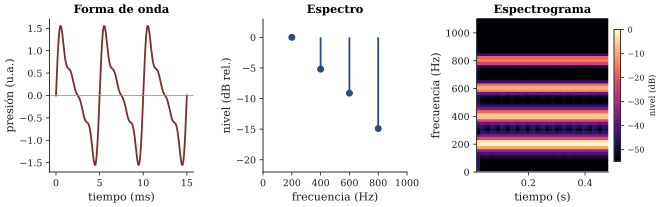
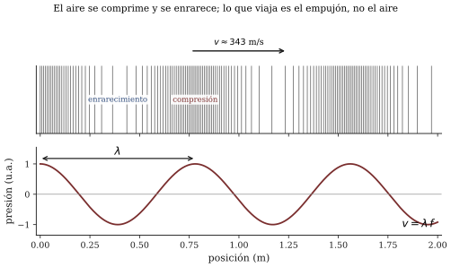

Sesión 02 · Curso Acústica Musical UC Objetivos que cubre: OA4.1 (leer forma de onda, espectro y espectrograma con sus ejes, unidades y limitaciones), OA1.1 (relacionar la vibración con el espectro; propagación y ), OA3.1 (vocabulario para la escucha argumentada).
En el ticket de salida de la sesión pasada usted dejó una predicción: cómo se vería un pulso si pudiéramos dibujarlo. La mayoría de las respuestas del curso — es lo habitual — dibujó algo parecido a lo que se ve en las películas: una montañita, un zigzag, “ondas” concéntricas como las de una piedra en el agua. La sesión partió por ahí porque la pregunta es más seria de lo que parece: el sonido no se ve, y todo lo que este curso va a “mirar” de aquí en adelante son traducciones — gráficos que convierten presión de aire en imagen. Quien no sabe leer los ejes de esas traducciones está mirando decoración.
La primera traducción es la forma de onda: un gráfico con el tiempo en el eje horizontal (en segundos o milisegundos) y en el vertical la presión sonora — cuánto se aparta el aire de su presión de reposo en cada instante, hacia la compresión (arriba) o hacia el enrarecimiento (abajo). Es el sonido visto como historia: qué pasó primero, qué pasó después. Un golpe seco aparece como una sacudida breve que se apaga; la nota de flauta, como una oscilación pareja que se repite página tras página. Benade (1990, cap. 3, secs. 3.1–3.3) introduce esta representación con un aparato mecánico — la aguja que raya una tira de papel en movimiento, el antecesor del osciloscopio — y vale la pena retener esa imagen: la forma de onda es lo que dejaría dibujado su tímpano si arrastrara un lápiz.
Lo que la sesión mostró en vivo, con el micrófono conectado a la demo, es que la forma de onda dice mucho y esconde mucho. El golpe y el silbido se distinguen a simple vista (una sacudida contra un vaivén regular). Pero la vocal “aaa” y la “ooo” cantadas en la misma nota se ven desconcertantemente parecidas: dos ondulaciones periódicas con el mismo período. Lo que las diferencia — el timbre — está dentro de la forma del vaivén, y ahí el ojo no llega.
La segunda traducción cambia la pregunta. En vez de “¿qué pasa en cada instante?”, el espectro pregunta: “¿de qué frecuencias está hecho este sonido, y con cuánta fuerza está presente cada una?”. El eje horizontal ahora es la frecuencia (Hz); el vertical, el nivel de cada componente (en la práctica, decibeles relativos — la sesión 06 hará justicia al decibel; por ahora basta leerlo como “más arriba = componente más fuerte”).
En el espectro, el silbido es casi un solo pico angosto: una frecuencia y poco más. La vocal cantada es una peineta de picos regularmente espaciados — los parciales del sonido, que en la voz están en razones enteras con el más grave. La “sss” es una nube ancha sin picos definidos: energía repartida en muchas frecuencias a la vez, sin periodicidad, y por eso sin altura cantable. Y el golpe seco reparte su energía en una franja amplia que se extingue enseguida. Las dos vistas son el mismo sonido: la forma de onda es el sonido como historia; el espectro, como receta de ingredientes. Ninguna es “la verdadera”; cada una responde preguntas que la otra no puede.
Este vocabulario ya es exigible en la escucha del día: “oigo un sonido con parciales fuertes en la zona aguda” es una descripción (dimensión D1 de la rúbrica); “suena brillante” es el punto de partida que hay que aprender a traducir.
La música cambia en el tiempo — esa es casi su definición — y el espectro de la sección anterior es una foto sin fecha. La tercera traducción, el espectrograma, junta ambas vistas: tiempo en el eje horizontal, frecuencia en el vertical, y el nivel codificado como color o intensidad (más oscuro o más encendido = más fuerte). Cada columna vertical del espectrograma es un espectro instantáneo; leídas de izquierda a derecha, cuentan la película completa.

En el espectrograma, el silbido con glissando es una línea delgada que sube; la vocal cantada, una familia de líneas horizontales paralelas (sus parciales); la “sss”, una banda difusa y alta; el golpe, una columna vertical delgada: todo el rango de frecuencias, casi ningún tiempo. Esta herramienta será el microscopio del curso: la usaremos para mirar instrumentos, salas y su proyecto de aquí a la sesión 15. Por eso la sesión insistió en un chequeo mínimo antes de creer nada: identificar en su app cuál eje es tiempo, cuál es frecuencia y qué significa el color. Espectrograma sin ejes leídos no es evidencia.
Al explorar los límites de las apps apareció un techo: casi todas las pantallas se cortan cerca de los 22 000 Hz (a veces 20 000, a veces 24 000). Ese techo no es una propiedad del sonido ni de su oído: es una propiedad de la herramienta, y entenderlo requiere la única noción de audio digital que este curso necesita.
El celular no guarda la presión del aire en forma continua: la mide muchas veces por segundo y guarda la lista de valores. Cada medición es una muestra, y la tasa típica es de 44 100 o 48 000 muestras por segundo. Una regla fundamental del muestreo dice que con muestras por segundo solo se puede representar fielmente el contenido por debajo de : con 44 100 muestras/s, nada sobre 22 050 Hz. De ahí el techo de su app. Las frecuencias que llegan al micrófono por encima de ese límite no desaparecen limpiamente: pueden colarse disfrazadas de frecuencias más bajas (el fenómeno se llama aliasing), y por eso los equipos filtran lo muy agudo antes de muestrear (Rossing et al. 2002, cap. 21, secciones de muestreo y aliasing).
Recuadro opcional (límites del microscopio). Hay un segundo límite, más sutil: el espectrograma se calcula analizando la señal por ventanas de tiempo. Ventana larga → frecuencias finamente resueltas pero eventos emborronados en el tiempo; ventana corta → lo contrario. Por eso dos golpes muy seguidos pueden verse como uno, y por eso el ajuste “tamaño de ventana/FFT” de las apps cambia el dibujo sin que cambie el sonido. No hay ajuste “correcto”: hay ajustes apropiados para preguntas distintas. Este tratamiento es deliberadamente instrumental; el detalle cuantitativo (teorema del muestreo) excede el curso y puede consultarse en Rossing et al. (2002, cap. 21).
Queda el otro asunto de la sesión: entre la fuente y el oído, ¿qué se mueve? No el aire en bloque — nadie siente viento al escuchar — sino una perturbación de presión que se pasa de mano en mano: cada porción de aire empuja a la siguiente y vuelve casi a su lugar. Lo que viaja es el empujón, no el material, como la ola del estadio viaja sin que nadie cambie de asiento.
Ese empujón avanza en el aire a m/s a 20 °C (la velocidad crece levemente con la temperatura; el valor redondo del curso es ese). El trueno del módulo 2 lo volvió aritmética: 3 segundos de retraso ≈ 1 kilómetro de distancia.
Si la fuente vibra periódicamente con frecuencia , cada nuevo empujón sale cuando el anterior ya avanzó un trecho fijo: la distancia entre crestas sucesivas viajando por el aire. Esa distancia es la longitud de onda , y las tres cantidades quedan atadas por la relación más reutilizada del semestre:

Con ella y proporciones: el La4 (440 Hz) mide en el aire m; el límite grave audible (20 Hz), unos 17 m — del porte de la sala —; el agudo (20 000 Hz), unos 17 mm. Que los sonidos musicales midan entre centímetros y metros, justo la escala de los instrumentos y de las salas, no es coincidencia: es el tema de casi todo lo que sigue (Campbell & Greated 1987, cap. 1; Roederer 1997, cap. 3, para el detalle de ondas y energía).
Su ticket de salida quedó apostado: el vaso golpeado, ¿una línea o varias en el espectrograma? La sesión 03 lo golpea de verdad: los objetos no vibran de cualquier manera sino en un repertorio de formas propias — sus modos — y el espectro es la huella digital de ese repertorio. Con esa idea se lanza, además, el proyecto del curso.